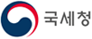
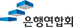

Title
Title 안내
안내 내용
젊음의 3박자를 유지하자
생각, 행동, 외모의 3박자를 항상 젊게 하자.
나는 늘 젊다 생각하고 늙어 간다는 것을 쉽게 인정하지 마라. 나이 들어 기능이 떨어지는 것은 어쩔 수 없지만 마음은 항상 젊게 갖고 행동도 젊게 하자.
사람들이 흔히 하는 말 중에 “이 나이에 어떻게...” “아으, 일주일만 젊었어도...” “나이든 사람이 주책” 등이 있다.
이런 말들을 멀리 하라. 새로운 것을 배우고 도전하는 일에 나이가 무슨 상관인가.
생각이 짧고 철없는 행동을 하면 당연히 주책이지만, 젊게 입고 최신 유행가를 부르고 인생을 즐기는 것은 주책이 아니다.
우리 몸은 정신과 아주 밀접한 관계를 갖고 긴밀히 상호작용을 하고 있다.
몸에 활력이 있어야 자신감과 의욕이 넘치듯이 마음을 젊게 하고 젊게 행동하면 몸도 따라서 젊어진다.
외모를 젊게 유지하면 마음이 젊어지고 마음이 젊어지면 신체의 노화 방지에 도움이 된다.
젊게 생각하고, 젊은이처럼 행동하고, 외모를 젊게 유지하는 것은 큰돈 들이지 않고 쉽게 할 수 있는 노화방지의 시작이다.
담배퇴장
담배는 백해무익이다. 아직도 담배를 피우고 있다면 당장 담배를 끊자. 알면서 담배를 끊지 못하는 사람이 많다고 그냥 넘어갈 수 있는 문제는 아니다.
담배를 끊지 않고는 노화방지나 건강관리를 생각할 수 없다. 담배 피우는 시간만큼 수명은 줄어든다. 당장 끊어라.
스스로 끊을 수 있는 자신이 없다면 금연학교나 금연클리닉을 다녀라. 자녀가 있다면 도움을 요청하라.
그래도 안 되면 금연보조제도를 이용하라. 할 수 있는 모든 방법을 동원해서 담배를 당신에게서 영원히 떠나보내야 한다
담배퇴장
-
 재무 현금
재무 현금기초연금
생활이 어려운 어르신에게 안정적인 소득기반을 제공하여 생활안정을 지원하는 서비스입니다.
- 문의처 : 보건복지부 콜센터(☎129)
- 신청방법 : 방문, 홈페이지
- 제공유형 : 현금
-
재무 현금
장애인연금
장애로 인하여 생활이 어려운 중증장애인의 안정된 삶을 위한 연금을 지급하는 서비스입니다.
- 문의처 : 보건복지부 콜센터(☎129)
- 신청방법 : 방문, 홈페이지
- 제공유형 : 현금
-
 재무 정보
재무 정보귀농귀촌지원제도
귀농귀촌 활성화를 위해 다양한 실행 지원 프로그램(상담, 교육, 정보제공 등)을 제공합니다.
- 문의처 : 귀농귀촌 콜센터(☎1899-9097)
- 신청방법 : 방문, 홈페이지
- 제공유형 : 상담 및 교육
-
재무 서비스
긴급복지지원 제도
생계곤란 등의 위기상황에 처한 사람에게 생계비 등을 신속하게 지원하는 제도입니다.
- 문의처 : 보건복지부 콜센터(☎129)
- 신청방법 : 방문, 유선
- 제공유형 : 서비스
-
 재무 서비스
재무 서비스노란우산
폐업·노령·사망 등의 생계위협으로부터 소기업·소상공인의 안정된 생활을 돕고, 사업재기의 기회를 제공하기 위해 운영되는 공적 공제제도입니다.
- 문의처 : 노란우산 콜센터(☎1666-9988)
- 신청방법 : 홈페이지, 모바일앱
- 제공유형 : 정보, 서비스 등
-
 재무 정보
재무 정보노인일자리사업
노인이 활기차고 건강한 노후생활을 영위할 수 있도록 다양한 일자리 및 사회활동을 지원하는 사업입니다.
- 문의처 : 노인일자리 상담 대표전화 (☎1544-3388)
- 신청방법 : 방문, 홈페이지
- 제공유형 : 정보, 서비스 등
-
 재무 현금
재무 현금농지연금
고령 농업인이 소유한 농지를 담보로 노후생활 안정자금을 매월 연금형식으로 지급받는 제도입니다.
- 문의처 : 한국농어촌공사 콜센터(☎1577-7770)
- 신청방법 : 홈페이지
- 제공유형 : 서비스
-
 재무 정보
재무 정보마이홈주거상담
공공임대, 주거급여, 주택금융 등 주거지원 정책에 대한 통합 안내 서비스입니다.
- 문의처 : 마이홈 콜센터(☎1600-1004)
- 신청방법 : 홈페이지
- 제공유형 : 서비스, 정보 등
-
 재무 현금
재무 현금서민금융지원제도
취약·서민계층의 원활한 금융생활을 지원하기 위해 다양한 서민금융 지원 제도를 제공합니다.
- 문의처 : 서민금융진흥원(☎1397)
- 신청방법 : 방문 및 홈페이지
- 제공유형 : 금융지원
-
재무 서비스
소상공인지원제도
소상공인 육성과 전통시장 활성화를 위해 다양한 소상공인지원 제도를 제공합니다.
- 문의처 : 중소기업통합콜센터(☎1357)
- 신청방법 : 방문, 홈페이지
- 제공유형 : 서비스
-
 재무 정보
재무 정보여성 취업지원서비스
일하고자 하는 여성의 취업을 지원하고, 일하는 여성이 계속적으로 일할 수 있도록 지원하는 서비스입니다.
- 문의처 : 여성새로일하기센터(☎1544-1199)
- 신청방법 : 홈페이지
- 제공유형 : 정보제공, 서비스
-
 재무 현금
재무 현금주택연금
집을 소유하고 계시지만 소득이 부족한 어르신들이 집을 담보로 맡기고 자기 집에 살면서 매달 국가가 보증하는 연금을 지급받는 제도입니다.
- 문의처 : 한국주택금융공사(☎1688-8114)
- 신청방법 : 방문, 홈페이지
- 제공유형 : 서비스
-
 재무 현금
재무 현금중소기업퇴직연금제도
상시근로자 30인 이하 영세 사업장을 대상으로 확정기여형 퇴직연금(DC)과 기업형 및 개인형퇴직연금(IRP)을 제공하며, 퇴직연금 공적서비스를 제공합니다.
- 문의처 : 근로복지공단 퇴직연금 콜센터(☎1661-0075)
- 신청방법 : 방문
- 제공유형 : 서비스
-
 재무 정보
재무 정보희망·내일키움통장
일하는 생계·의료·주거·교육급여 수급가구 및 차상위계층 및 자활근로사업단의 성실한 근로자들이 자산을 형성할 수 있도록 지원하는 사업입니다.
- 문의처 : 보건복지부 콜센터(☎129)
- 신청방법 : 방문, 홈페이지
- 제공유형 : 서비스
-
 재무 금융
재무 금융에너지바우처
에너지 취약계층에게 에너지바우처를 지급하여 전기·가스·지역난방·LPG 등 필요 에너지의 이용 비용을 지원하는 제도입니다.
- 문의처 : 에너지바우처 콜센터(☎1600-3190)
- 신청방법 : 방문, 홈페이지
- 제공유형 : 금융지원
-
재무 현금
청년내일채움공제
청년이 중소기업에서 장기근속할 수 있도록 청년·기업·정부가 2년 간 공동으로 적립하여 청년의 자산형성을 지원하는 제도입니다.
- 문의처 : 고용노동부 고객상담센터(☎1350)
- 신청방법 : 홈페이지
- 제공유형 : 금융지원
-

재무 현금근로장려금
일은 하지만 소득이 적어 생활이 어려운 근로자, 사업자 가구에 대하여 근로를 장려하고 실질소득을 지원하는 근로연계형 소득지원 제도입니다.
- 문의처 : 근로·자녀장려금 상담센터(☎1566-3636)
- 신청방법 : 유선, 홈페이지
- 제공유형 : 현금
-
재무 현금
자녀장려금
만 18세 미만의 부양자녀가 있는 저소득 가구의 자녀양육 부담을 경감하기 위한 지원 제도입니다.
- 문의처 : 근로·자녀장려금 상담센터(☎1566-3636)
- 신청방법 : 유선, 홈페이지
- 제공유형 : 현금
-
 재무 정보
재무 정보농어가 목돈마련 저축 장려금
농어민의 재산형성을 지원하고 안정된 생활기반 조성을 위한 정책상품으로 일정기간 저축 시 원리금과 저축장려금을 지급합니다.
- 문의처 : 농협(☎1600-2800), 수협(☎1588-4119)
- 신청방법 : 방문
- 제공유형 : 정보
-
 재무 금융
재무 금융출산육아기고용안정장려금(대체인력지원금)
직원의 출산전후휴가, 유산ㆍ사산 휴가, 육아기 근로시간 단축기간 중 대체인력을 채용하여 사용하는 사업주에게 지원금을 지급하는 제도입니다.
- 문의처 : 고용노동부 고객상담센터(☎1350)
- 신청방법 : 방문, 홈페이지
- 제공유형 : 금융지원
-
재무 금융
고령자 계속고용장려금
정년에 도달한 근로자를 정년 이후에도 계속 고용하는 제도를 운영하는 사업주에게 비용의 일부를 지원하는 제도입니다.
- 문의처 : 고용노동부 고객상담센터(☎1350)
- 신청방법 : 방문, 홈페이지
- 제공유형 : 금융지원
-
재무 금융
신중년 적합직무 고용장려금
만 50세 이상 구직자를 신중년 적합직무에 고용하는 사업주에게 인건비를 지원하여 신중년 고용을 창출하는 제도입니다.
- 문의처 : 고용노동부 고객상담센터(☎1350)
- 신청방법 : 방문, 홈페이지
- 제공유형 : 금융지원
-
 재무 서비스
재무 서비스건설근로자 생활안정대부
건설근로자의 실질적인 생활안정에 기여하고자 공제회에서 규정한 6가지 사유에 해당사항이 있는 경우 대부금을 지원하는 서비스입니다.
- 문의처 : 건설근로자공제회 대표전화(☎1666-1122)
- 신청방법 : 방문, 홈페이지
- 제공유형 : 서비스
-
재무 서비스
근로자 생활안정자금 융자
저소득근로자에 대한 생활자금과 임금체불로 인해 생계곤란을 겪는 근로자에게 생계비를 저리로 융자하여 생활안정 및 근로의욕을 고취하는 사업입니다.
- 문의처 : 근로복지공단 대표전화(☎1588-0075)
- 신청방법 : 방문, 홈페이지
- 제공유형 : 서비스
-

전국은행연합회
은행별 상품과 금리를 확인할 수 있으며, 금융관련 다양한 정보를 제공합니다.
-

저축은행중앙회
저축은행별 상품과 금리, 대출정보를 확인할 수 있으며, 금융관련 다양한 정보를 제공합니다.
-

생명보험협회
개인연금 등 가입한 보험 내역과 보험과 관련한 여러 정보를 제공합니다.
-
손해보험협회
보험가입내역과 손해보험 및 연금 등 정보를 제공합니다.
-

금융소비자 정보포털(파인)
금융상품, 휴면계좌, 보험가입내역 등 각 금융기관의 정보를 통합하여 제공합니다.
-

서민금융 1332
서민맞춤대출, 서민우대상품, 불법사금융 대응, 개인신용정보 등 금융생활지원 서비스를 제공합니다.
-

퇴직연금 종합안내
퇴직연금 소개, 퇴직연금 수익률 비교 등 퇴직연금과 관련한 정보를 제공합니다.
-
펀드정보 One-Click 시스템
펀드상품, 수익률 등 펀드와 관련한 다양한 정보를 제공합니다.
-

한국금융투자자보호재단
투자자보호, 투자자교육, 금융상품비교, 금융사기 예방 등의 정보를 제공합니다.
-

한국주택금융공사
주택연금에 대한 정보를 제공합니다.
-

신용회복위원회
신용관리 및 신용회복 지원, 채무조정, 소액금융지원 등의 정보를 제공합니다.
-

사회연대은행
마이크로크레딧 창업지원, 사회적기업 지원, 대학생 학자금 지원 정보를 제공합니다.